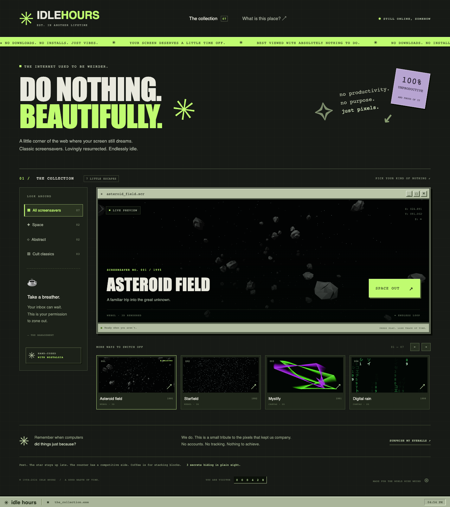
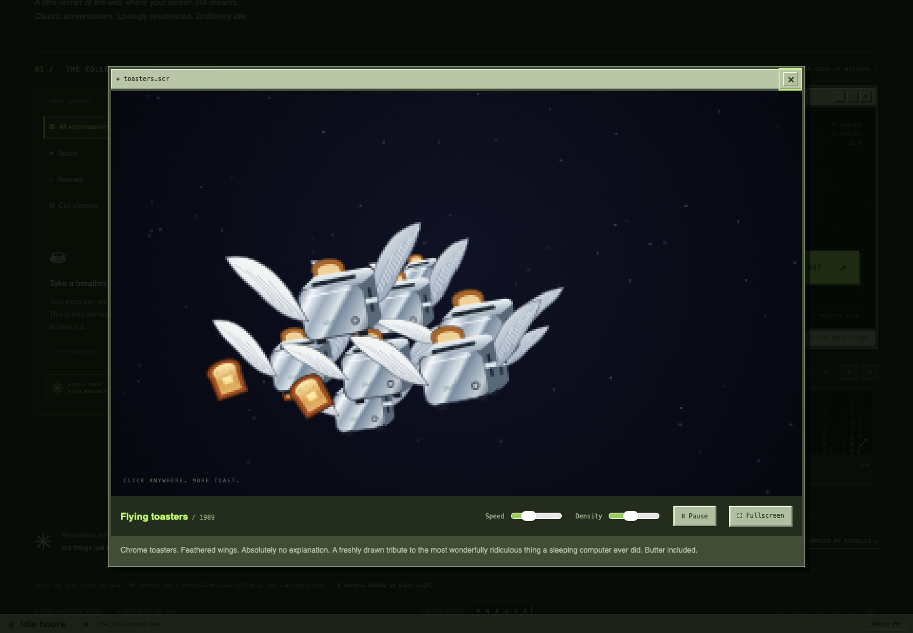
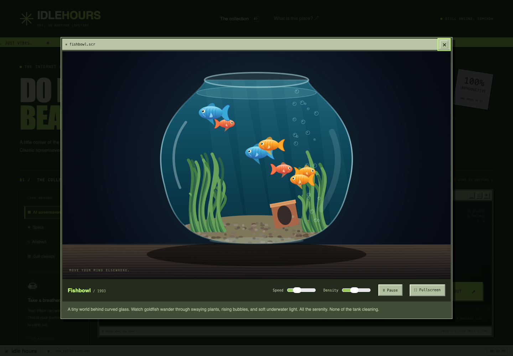
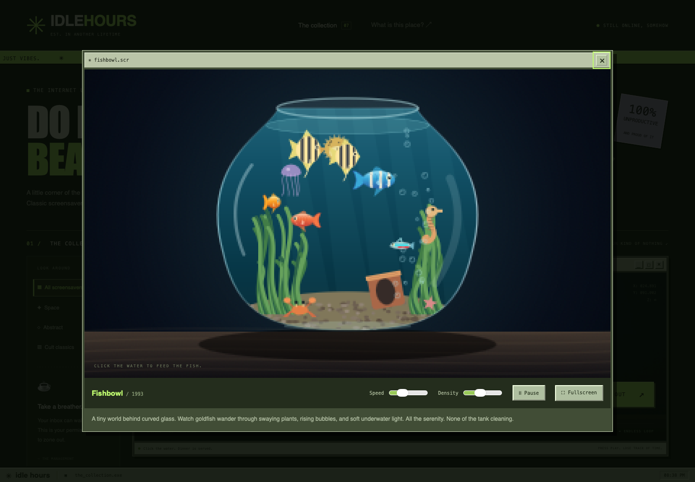
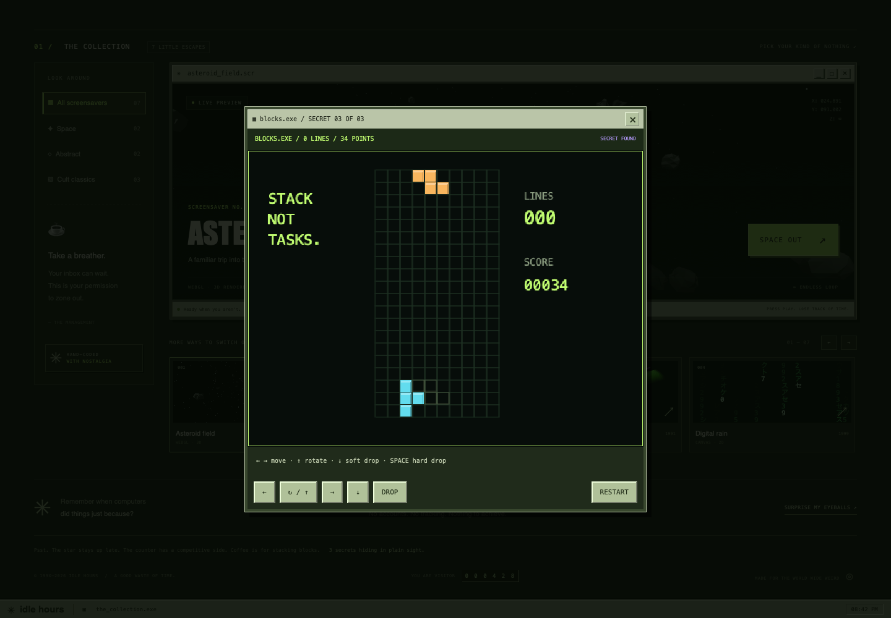

Today I had some free time and tokens to use. We finished the Codex integration into cuvm, so I gave GPT-6.1 Sol the same half-hour screensaver challenge I gave Opus 5.5.
For this run, Codex had shell and file tools, a project workspace, a local dev server, and Playwright driving WebKit inside a disposable Mac. Same idea: keep talking, keep building, and stop when the clock runs out.
30:00interactive session
7screensavers
3easter eggs
GPT-6.1 Solmodel
40.1Koutput tokens
4.15Mcached input tokens read
≈$1.14estimated API equivalent
I used a subscription. The dollar figure estimates these tokens at standard API rates; it is not a per-run bill.
Play with Sol's screensaver site →
The collected build, with relative asset paths for this preview. Contains continuous animation and flashing effects in one hidden extra.

Scientific Analysis
| Feature | Claude | Codex |
|---|---|---|
| Faster | ✓ | X |
| Cheaper | X | ✓ |
| Overall 90s Vibe | ✓ | X |
| Digital Rain vibe | X | ✓ |
| MIDI Sound | ✓ | X |
| Sharks & whales | ✓ | X |
| Literal fishbowl | X | ✓ |
Final score: 4 - 3 Claude, but Codex could make 3 of Claude's sites for the same price.*
*Napkin math.
Sol made the better overall site and the better Tetris, with seven screensavers against Opus's nine.
I can't really quantify it. It feels more smooth, and Codex did add density in addition to speed, which Claude doesn't have. Codex's “Asteroid Field” is honestly pretty chill and matches the more polished look.
Digital Rain has that Matrix or Hackers vibe.
Claude absolutely nailed the Windows settings screen styles. It's perfect: the blue header with white text, the X in the corner goes back to the carousel, an old CRT shows the screensavers, dropdown, preview, speed, and silly descriptions to add flavor.
Claude had sound. On its site there is a MIDI button that plays some old sounding tune.
Claude also added teapots to the pipes. I looked for them and never spotted one, but I did see the “all teapots” mode.
Codex did try on the vibe. There are elements like the visitor counter and coffee cup. It's possible it interpreted the prompt as a modern website with an old theme, not literally a site from 1995.


Still too crisp
The brief was the same: start with an asteroid field, put the screensavers in a carousel, and give each one a detail view. Then I asked for Flying Toasters and Fishbowl.
As with Opus, I asked for less crisp sprites, more aquatic diversity, pipes, and toasters that bounce off the sides.
Opus was literally faster. I was really impressed with the speed for graphics code.





Easter eggs before sharks
I reused the main prompts from the Opus experiment. Near the end, I changed the order.
cuvm warned me that five minutes remained, so I moved the three easter eggs ahead of sharks and whales. One of Sol's choosing, then games from the same list I gave Opus.
It completed the three easter eggs. Tetris was one of them, and I liked its version better.
I'm a Tetris subject-matter expert, as I've installed it on every scientific calculator I ever owned, studied a lot of math, and had it as a default game on a couple of old school cell phones. Codex's plays more like the real thing. Piece distribution mainly. Claude didn't give me enough | even early on, when the difficulty should be lower.

Thirty-one seconds for a whale
Then I delivered the sharks-and-whales request. The clock was at 29:29. Sol had 31 seconds left, and the session ended before it completed the change.
29:29 Me
sharks and whales sometimes in fishbowl not often plzTime left for the sharks-and-whales request
Each track is the full 30-minute session. Follow-up order and timing differed; these bars show the opportunity each request had.
What the tokens looked like
Codex was considerably cheaper and more efficient, coming in at roughly 40k output tokens, 4M input tokens, and $1.14 at API rates. That's a steal.
Opus recorded about 100,000 output tokens, with an estimated API equivalent of roughly $5.50.
| Usage | Opus 5.5 | GPT-6.1 Sol |
|---|---|---|
| Uncached input | 5,260 | 161,385 |
| Cache writes | 185,087 | 0 reported |
| Cached input reads | 9,995,317 | 4,148,736 |
| Output | 99,837 | 40,123 |
| Of which reasoning | 21,649 | 6,081 |
| API equivalent | ≈$5.50 | ≈$1.14 |
Cached input is read again across requests. Reasoning is included in output. The Opus estimate includes a tiny amount of Haiku usage; its token column covers Opus only. Token counts alone do not measure how quickly the website came together.
I used subscriptions for both runs. Sol's estimate uses published standard API rates: $2 per million uncached input tokens, $0.10 for cached input, and $10 for output. That works out to about $0.323 + $0.415 + $0.401, or $1.14 rounded. These figures compare recorded token usage at API rates; they do not allocate the cost of either subscription.
Based on what it completed, I think it could add the remaining adjustments to match Claude's features in another 15 minutes and about $0.75. I arrived at this using a highly scientific technique called “napkin math.”
Run notes
The clock, integration, source, and evidence
The recorded clock
The harness recorded a 1,800-second limit and a 1,800.2-second interactive session. Setup happened before that clock; thinking, typing, and waiting happened inside it.
- Startup to attach
- 1m 19.3s
- Interactive session
- 30m 00.2s
- Collection after session
- 13.4s
- Entire run, including cleanup
- 32m 20s
The main brief arrived at approximately 6:11 in Sol's session and 5:40 in Opus's. Sol's easter-egg request arrived at 26:10; sharks and whales at 29:29. Offsets are approximate because the saved Codex prompt times have whole-second resolution.
What we integrated
The Codex integration reused cuvm's disposable VM, credential proxy, checks, collection, and cleanup. Native macOS desktop support needed a separate pinned runtime, desktop tools, and an app-activation helper.
This web experiment used the browser configuration: Codex CLI 0.167.0, shell and file tools, and Playwright controlling WebKit. Native desktop controls were exercised in separate integration runs. The browser and native desktop configurations were separate at this milestone.
What the run preserved
The cleaned export contains 19 original screenshots, the 13 operator prompts with their times, a run summary, and a source-and-build ZIP. The record also reports 61 saved browser page snapshots.
All 13 files in the exported project matched the guest's recorded hashes. Unchanged files came from the exact input snapshot; changed files were collected from the guest. The ZIP contains the collected build without a new build or transcript replay. Source-to-build correspondence has not been independently verified by rebuilding.
The preview copies that collected build. Its JavaScript and CSS are unchanged; only the HTML asset URLs were made relative so it works in this folder.
- Cleaned run summary (JSON)
- Exact operator prompts and timing (JSON)
- Collected source and build (ZIP)
- Comparison calculations and screenshot provenance (JSON)
The four screensaver and game screenshots on this page are original run captures, with their recorded hashes preserved. The Codex homepage image is a fresh viewport capture of the collected final build. Both homepage comparison images are shown in full; click to enlarge. The raw record, transcripts, account metadata, network logs, and certificate material remain private.
About the collected demo
Some of the demo's small category counts, years, and technical labels have low contrast. A later accessibility check flagged 19 text elements on the homepage. I've kept the collected build unchanged.
What PASS means here
All 31 pre-run and 30 post-run checks passed. The VM was removed, the proxy stopped, and the inputs and golden image were unchanged. No forbidden tool use or leak errors were reported.
The harness PASS covers containment, collection, and cleanup. Feature and aesthetic observations above are my experience of these two sessions. Preview browser checks are documented separately from the original run.
The cost calculation
Sol reported 4,310,121 total input tokens, including 4,148,736 cached input tokens, and 40,123 output tokens. Its 6,081 reasoning tokens are included in output. No cache-write input tokens were reported.
The standard API estimate is (161,385 × $2 + 4,148,736 × $0.10 + 40,123 × $10) / 1,000,000 = $1.1388736. The largest reported request had 121,759 input tokens, below the published long-context pricing threshold. Rates were checked November 11, 2026.
The earlier run's approximately $5.50 is Claude Code's recorded API-equivalent estimate. Its method and token breakdown are in the original experiment and its run summary.